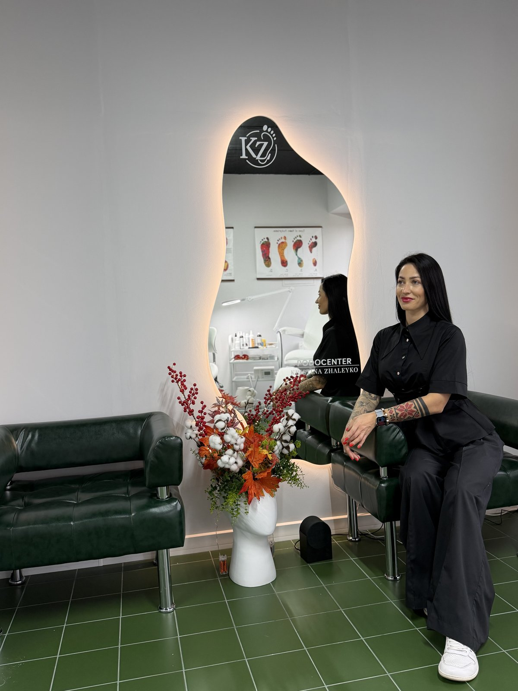
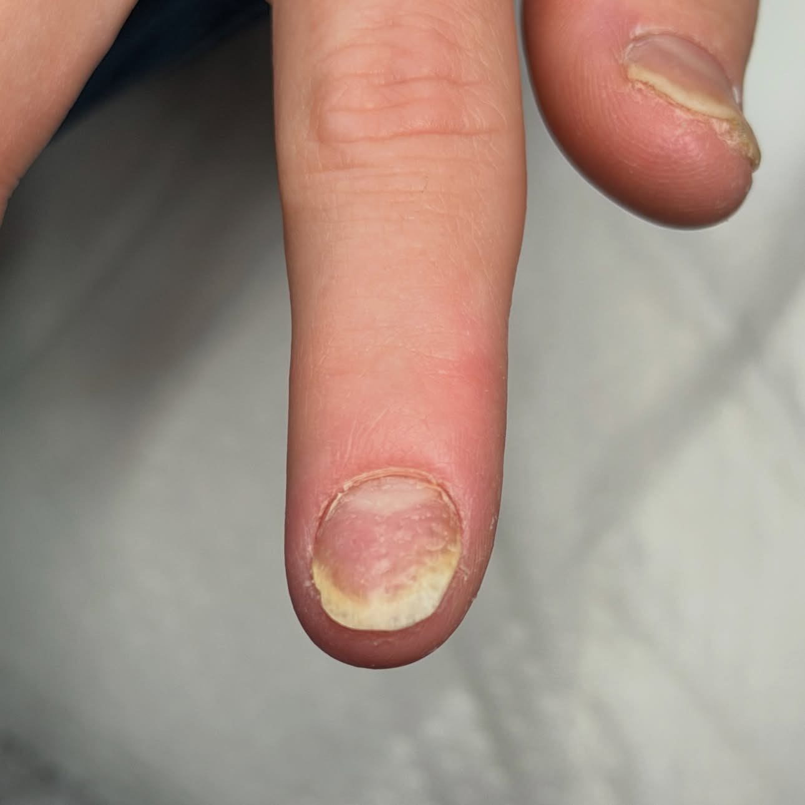
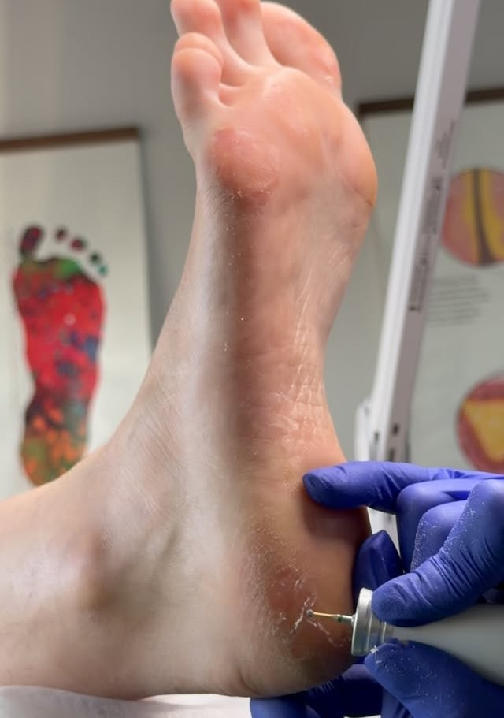
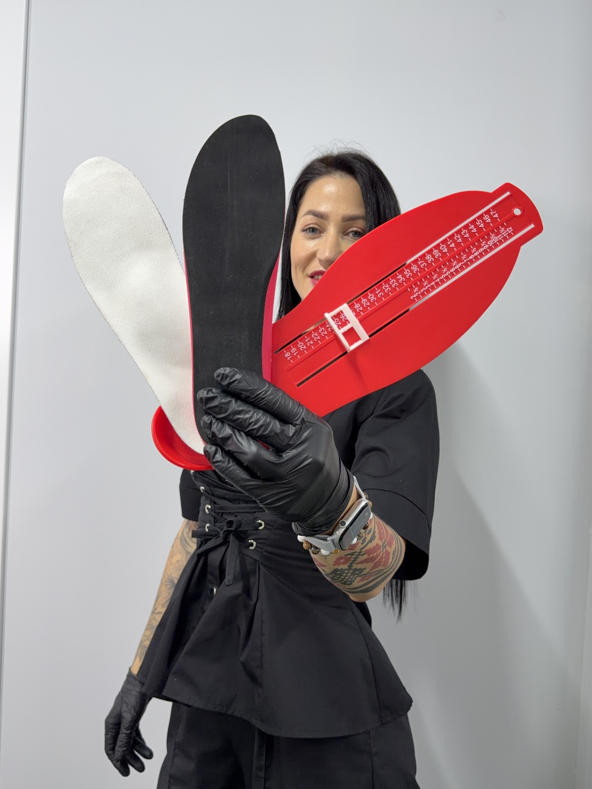
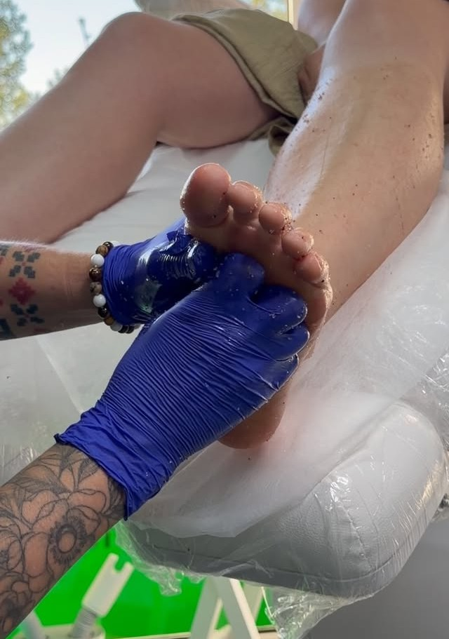
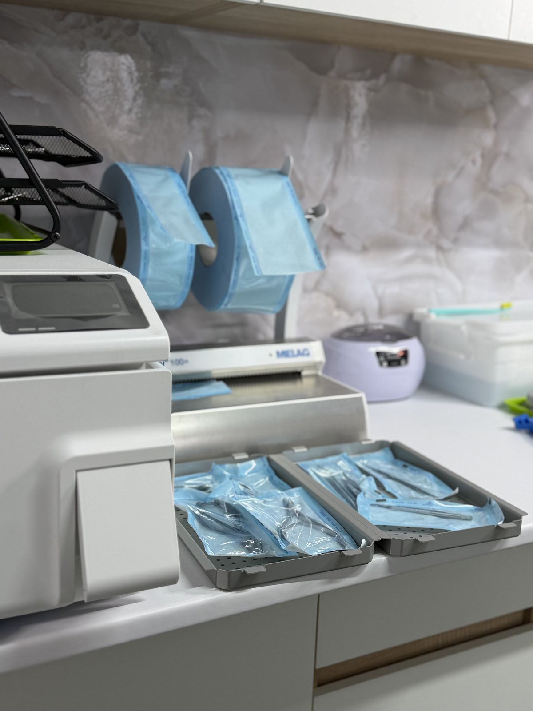
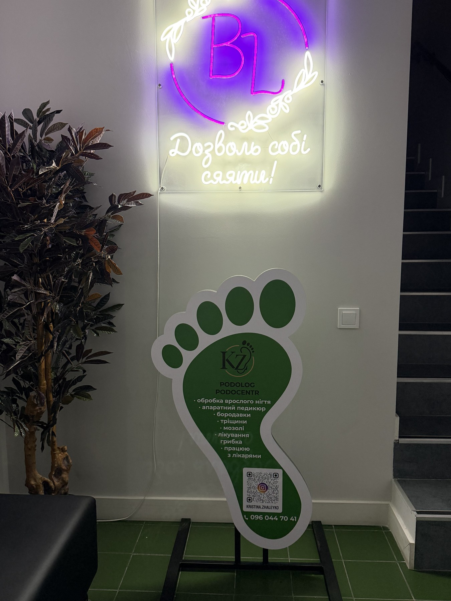
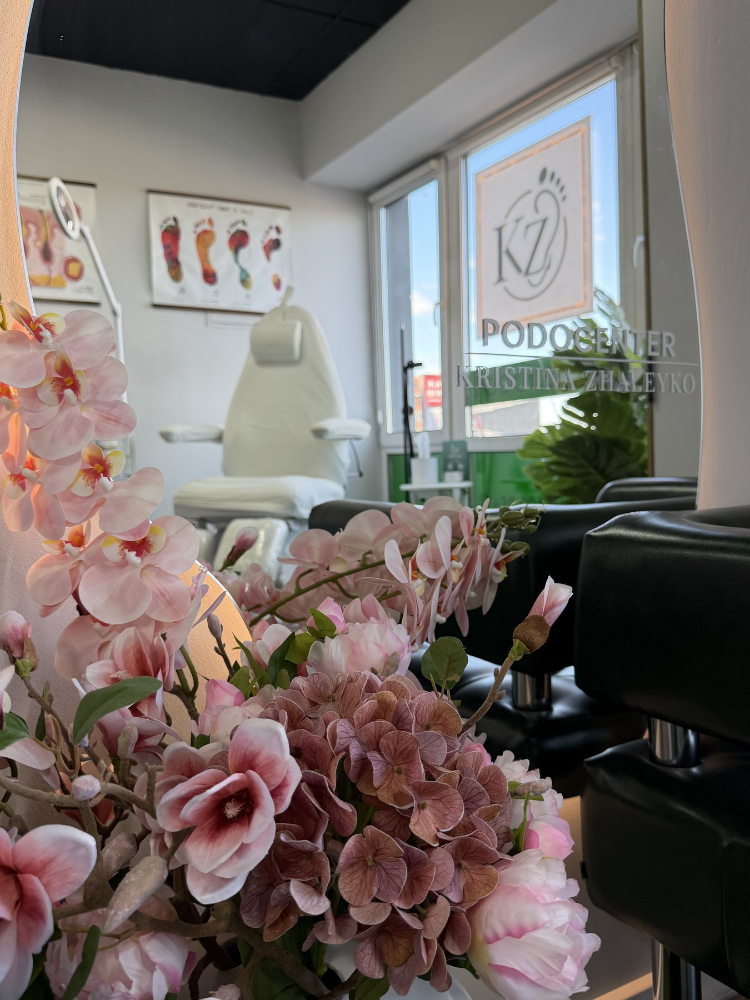
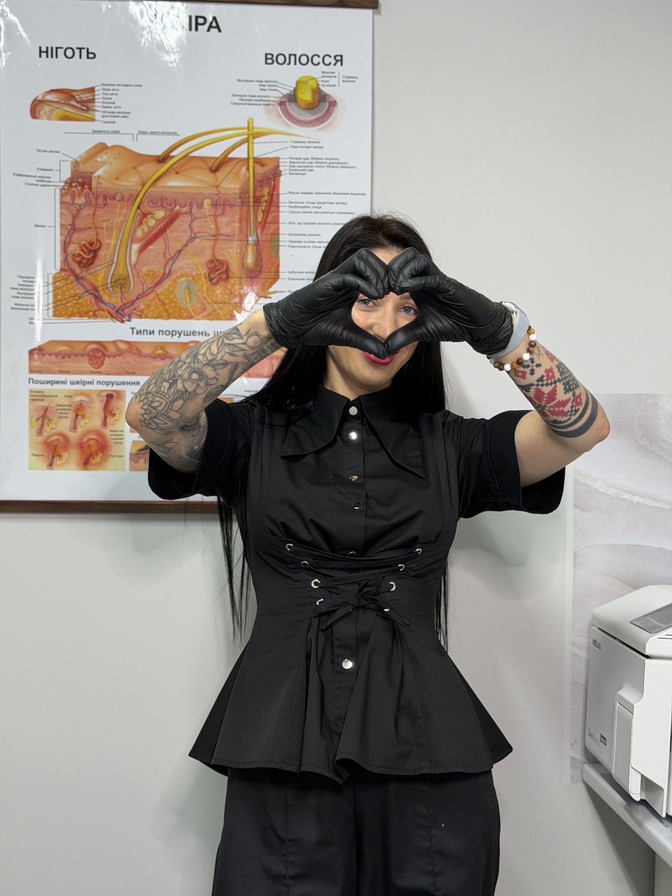

Спеціалізований центр подології Христини Жалейко. Застосовуємо доказову німецьку ортоніксію (титанова нитка), відновлюємо стопи при оніхолізисі, тріщинах та деформаціях у тісному контакті з лікарями.

Автор практичних методик відновлення складних стоп, інструктор подологів України, експерт безопераційного збереження нігтьової пластини.
Оберіть симптом нижче, щоб побачити точний протокол вирішення, рівень відчуттів, час маніпуляції та вартість.

Пульсуючий біль у кутику, набряк або запалення навколонігтьового валика. Замість травматичного хірургічного видалення нігтя ми застосовуємо німецьку титанову нитку з пам'яттю форми.
Оберіть необхідні процедури та отримайте точний прозорий розрахунок тривалості та вартості перед записом.
Кожна фотографія відображає справжню роботу наших спеціалістів у кабінеті, реальні інструменти та стерильні умови.

Терапія тріщинАпаратне шліфування надлишкового ороговіння без порізів. Накладання оклюзійних захисних пов'язок.
Німецька коригуюча система з пам'яттю форми. Знімає больовий тиск за 15 хв без операцій та швів.

БіомеханікаДіагностика склепіння стопи та балансу ходи. Моделювання супінаторів під ваше повсякденне або спортивне взуття.

Медичний педикюрАпаратна обробка без розпарювання у ванні. Безпека при діабетичній стопі, натоптишах та гіпергідрозі.

Жодних компромісів із вашим здоров'ям. Ми не використовуємо дешеві «сухожарові шафи». Кожен інструмент проходить регламентований німецький 4-етапний цикл стерилізації, а крафт-пакет з кольоровим хімічним індикатором відкривається виключно у вашій присутності.
Окремий вхід з вулиці Григорія Сковороди 11/3, зручний під'їзд, паркінг та затишна атмосфера турботи.

Фасад центру • вул. Г. Сковороди 11/3
Стерильний кабінет та комфортні крісла
Щира турбота про здоров'я ваших стопОніхолізис, гнійні пароніхії та грибкові ураження потребують комплексного підходу. Христина Жалейко веде пацієнтів у тісній взаємодії з хірургами, дерматологами та ендокринологами, гарантуючи стійке одужання.
Маєте сумніви щодо діагнозу? Надішліть чітке фото проблемної зони в Telegram — Христина Жалейко особисто зорієнтує щодо доцільності візиту.
Надіслати фото в TelegramНі, процедура абсолютно безболісна і не вимагає знеболювальних уколів. Титанова нитка фіксується на поверхні нігтьової пластини за допомогою стоматологічного фотополімеру. Полегшення болю при ходьбі ви відчуваєте вже у перші хвилини після встановлення за рахунок підняття врослого краю.
Естетичний педикюр маскує недоліки (покриття гель-лаком) і часто виконується з розпарюванням у ванночці, що протипоказано при тріщинах і грибку. Подолог працює «на суху» з використанням медичних кератолітиків, делікатно усуваючи гіперкератоз, стрижневі мозолі та відновлюючи захисний ліпідний бар'єр шкіри без ризику інфікування.
Головне правило — нічого не зрізати самостійно за кілька днів до візиту. Не розпарюйте ноги, не використовуйте пластирі від мозолів і не наносьте кольоровий лак перед прийомом, щоб подолог міг оцінити природний стан шкіри та нігтів.
Направлення не потрібне. Ви можете записатися самостійно онлайн. Якщо під час огляду подолог виявить показання для додаткових лабораторних аналізів або консультації дерматолога/хірурга, ми надамо точні рекомендації та контакти перевірених лікарів-партнерів.
Працюємо за попереднім записом, щоб приділити кожному пацієнту максимум уваги без черг та очікування.
Перегляньте доступні вільні віконця подолога безпосередньо в електронному календарі та зафіксуйте свій візит за 1 хвилину.
Відкрити календар онлайн-запису🔒 Миттєве підтвердження запису у вашому смартфоні